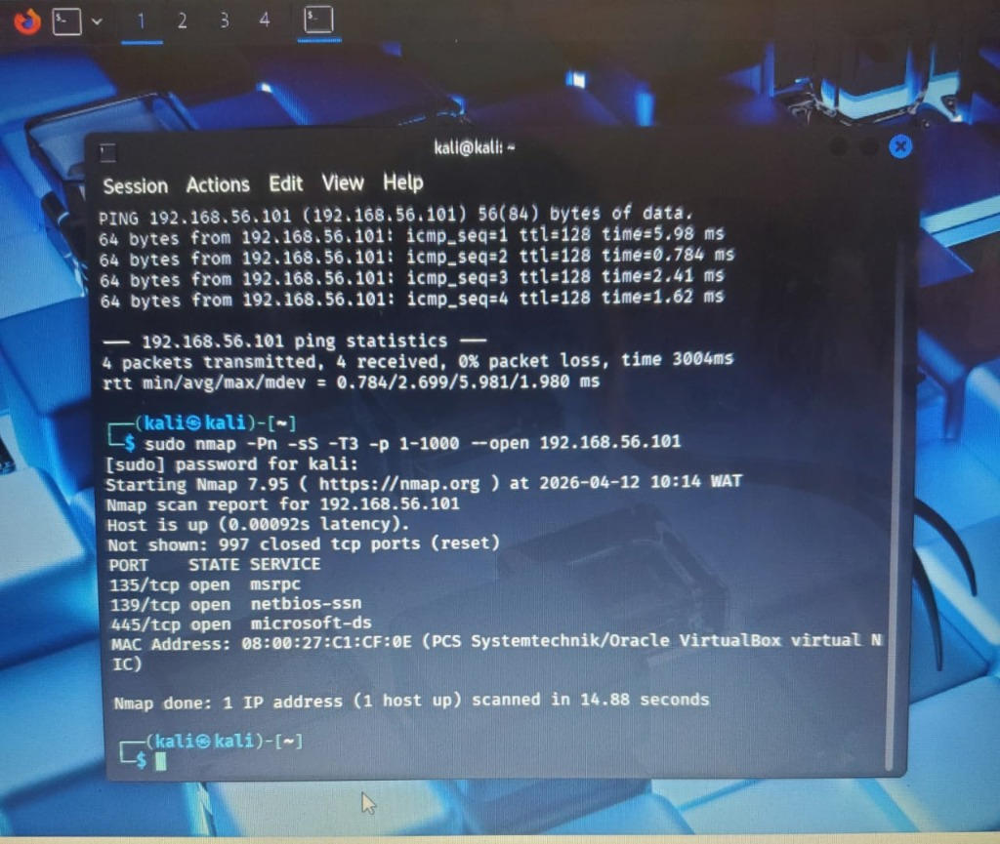
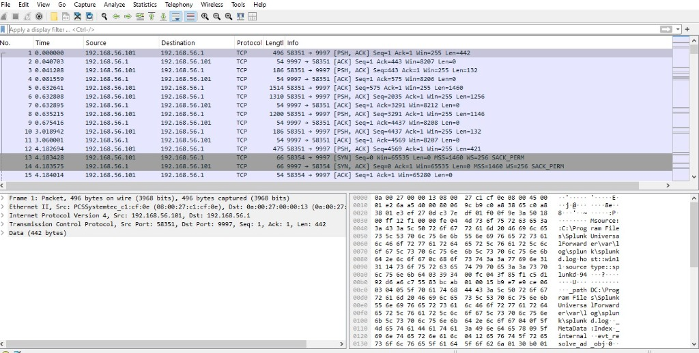
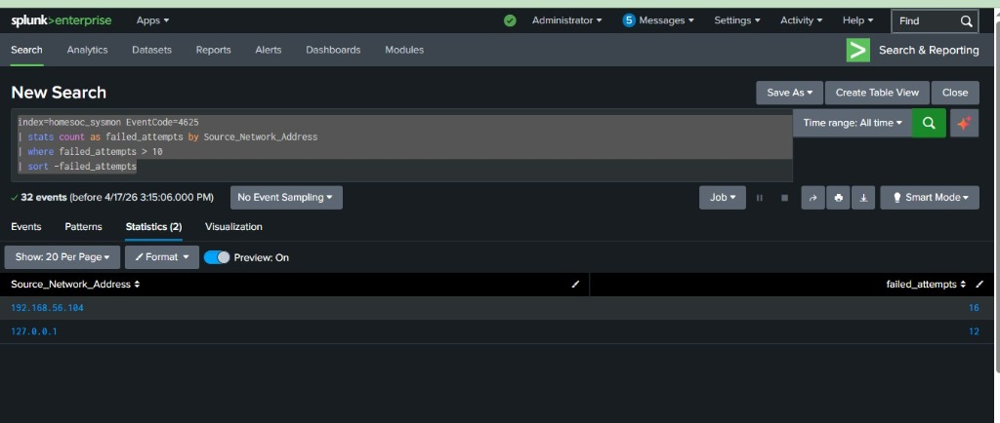

Finding Open Ports and Vulnerable Services
I started the lab by figuring out what was active on the network. I used a Kali Linux machine to scan the target Windows 11 system. The goal was to find open ports and services that could be weak points for later phases. I watched the traffic in real time using Wireshark to see how many packets were sent during the process.
Using Kali Linux, I ran an aggressive port scan on the target system. I skipped host discovery to make the scan faster and focused on the first 1000 ports to see what was listening.
sudo nmap -Pn -sS -T3 -p 1-1000 --open 192.168.56.101-Pn: Skip host discovery (assume host is up)-sS: TCP SYN scan (stealthier than full connect scan)-T3: Timing template (balanced speed and stealth)-p 1-1000: Scan the top 1000 ports--open: Show only open ports in outputThe scan finished quickly and showed that several ports were open. This gave me the information I needed to plan the next stage of the attack.

While the scan was running, I used Wireshark to capture every packet on the network adapter. The capture file shows a massive burst of TCP SYN packets coming from the Kali machine and hitting the Windows target on many different ports in a very short time.

The scanning activity was easy to spot in Splunk because it triggered many Network Connection events. I used a specific query to find any IP address that was trying to connect to a high number of unique ports within a small window of time.
index=homesoc_sysmon EventCode=3
| stats count as connection_attempts by SourceIp, DestPort
| where connection_attempts > 10
| sort -connection_attempts
This first phase showed how loud even a simple scan can be. With the right configuration in Sysmon and Splunk, you can see someone knocking on your doors before they even try to break in. It is the best early warning sign you can get in a lab or a real network.